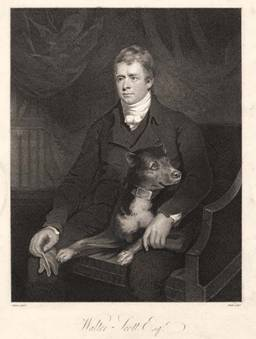
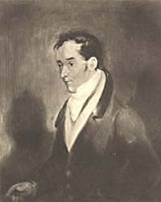
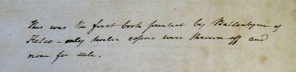
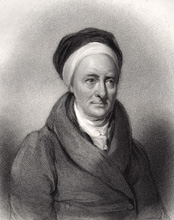
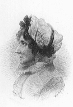
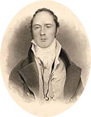

<!DOCTYPE HTML PUBLIC "-//W3C//DTD HTML 4.01 Transitional//EN">
<html lang="en-GB">
<head>
<title>Introduction</title>
<meta charset="utf-8" /> 
<meta http-equiv="description" content="This page provides an introduction to Sir Walter Scott's An Apology for Tales of Terror">
</head>
<html xmlns:v="urn:schemas-microsoft-com:vml"
xmlns:o="urn:schemas-microsoft-com:office:office"
xmlns:w="urn:schemas-microsoft-com:office:word"
xmlns:st1="urn:schemas-microsoft-com:office:smarttags"
xmlns="http://www.w3.org/TR/REC-html40">

<head>
<meta http-equiv=Content-Type content="text/html; charset=windows-1252">
<meta name=ProgId content=Word.Document>
<meta name=Generator content="Microsoft Word 11">
<meta name=Originator content="Microsoft Word 11">
<link rel=File-List href="again_files/filelist.xml">
<link rel=Edit-Time-Data href="again_files/editdata.mso">
<!--[if !mso]>
<style>
v\:* {behavior:url(#default#VML);}
o\:* {behavior:url(#default#VML);}
w\:* {behavior:url(#default#VML);}
.shape {behavior:url(#default#VML);}
</style>
<![endif]-->
<title>Introduction</title>
<o:SmartTagType namespaceuri="urn:schemas-microsoft-com:office:smarttags"
 name="State"/>
<o:SmartTagType namespaceuri="urn:schemas-microsoft-com:office:smarttags"
 name="City"/>
<o:SmartTagType namespaceuri="urn:schemas-microsoft-com:office:smarttags"
 name="PlaceType"/>
<o:SmartTagType namespaceuri="urn:schemas-microsoft-com:office:smarttags"
 name="country-region"/>
<o:SmartTagType namespaceuri="urn:schemas-microsoft-com:office:smarttags"
 name="place"/>
<!--[if gte mso 9]><xml>
 <o:DocumentProperties>
  <o:Author>Georgia Southern University</o:Author>
  <o:LastAuthor>Georgia Southern University</o:LastAuthor>
  <o:Revision>3</o:Revision>
  <o:TotalTime>45</o:TotalTime>
  <o:Created>2007-11-16T13:25:00Z</o:Created>
  <o:LastSaved>2007-11-16T13:30:00Z</o:LastSaved>
  <o:Pages>1</o:Pages>
  <o:Words>4671</o:Words>
  <o:Characters>26627</o:Characters>
  <o:Company>Georgia Southern University</o:Company>
  <o:Lines>221</o:Lines>
  <o:Paragraphs>62</o:Paragraphs>
  <o:CharactersWithSpaces>31236</o:CharactersWithSpaces>
  <o:Version>11.8132</o:Version>
 </o:DocumentProperties>
</xml><![endif]--><!--[if gte mso 9]><xml>
 <w:WordDocument>
  <w:Zoom>110</w:Zoom>
  <w:SpellingState>Clean</w:SpellingState>
  <w:GrammarState>Clean</w:GrammarState>
  <w:ValidateAgainstSchemas/>
  <w:SaveIfXMLInvalid>false</w:SaveIfXMLInvalid>
  <w:IgnoreMixedContent>false</w:IgnoreMixedContent>
  <w:AlwaysShowPlaceholderText>false</w:AlwaysShowPlaceholderText>
  <w:BrowserLevel>MicrosoftInternetExplorer4</w:BrowserLevel>
 </w:WordDocument>
</xml><![endif]--><!--[if gte mso 9]><xml>
 <w:LatentStyles DefLockedState="false" LatentStyleCount="156">
 </w:LatentStyles>
</xml><![endif]--><!--[if !mso]><object
 classid="clsid:38481807-CA0E-42D2-BF39-B33AF135CC4D" id=ieooui></object>
<style>
st1\:*{behavior:url(#ieooui) }
</style>
<![endif]-->
<style>
<!--
 /* Font Definitions */
 @font-face
	{font-family:"Palatino Linotype";
	panose-1:2 4 5 2 5 5 5 3 3 4;
	mso-font-charset:0;
	mso-generic-font-family:roman;
	mso-font-pitch:variable;
	mso-font-signature:-536870009 1073741843 0 0 415 0;}
 /* Style Definitions */
 p.MsoNormal, li.MsoNormal, div.MsoNormal
	{mso-style-parent:"";
	margin:0in;
	margin-bottom:.0001pt;
	mso-pagination:widow-orphan;
	font-size:10.0pt;
	font-family:"Times New Roman";
	mso-fareast-font-family:"Times New Roman";}
p.MsoFootnoteText, li.MsoFootnoteText, div.MsoFootnoteText
	{margin:0in;
	margin-bottom:.0001pt;
	mso-pagination:widow-orphan;
	font-size:10.0pt;
	font-family:"Times New Roman";
	mso-fareast-font-family:"Times New Roman";}
span.MsoFootnoteReference
	{vertical-align:super;}
a:link, span.MsoHyperlink
	{color:blue;
	text-decoration:underline;
	text-underline:single;}
a:visited, span.MsoHyperlinkFollowed
	{color:purple;
	text-decoration:underline;
	text-underline:single;}
pre
	{margin:0in;
	margin-bottom:.0001pt;
	mso-pagination:widow-orphan;
	font-size:10.0pt;
	font-family:"Courier New";
	mso-fareast-font-family:"Times New Roman";
	color:black;}
span.textmessage1
	{mso-style-name:textmessage1;
	color:black;
	mso-text-animation:none;
	text-decoration:none;
	text-underline:none;
	text-decoration:none;
	text-line-through:none;}
span.SpellE
	{mso-style-name:"";
	mso-spl-e:yes;}
span.GramE
	{mso-style-name:"";
	mso-gram-e:yes;}
@page Section1
	{size:8.5in 11.0in;
	margin:1.0in 1.25in 1.0in 1.25in;
	mso-header-margin:.5in;
	mso-footer-margin:.5in;
	mso-paper-source:0;}
div.Section1
	{page:Section1;}
-->
</style>
<!--[if gte mso 10]>
<style>
 /* Style Definitions */
 table.MsoNormalTable
	{mso-style-name:"Table Normal";
	mso-tstyle-rowband-size:0;
	mso-tstyle-colband-size:0;
	mso-style-noshow:yes;
	mso-style-parent:"";
	mso-padding-alt:0in 5.4pt 0in 5.4pt;
	mso-para-margin:0in;
	mso-para-margin-bottom:.0001pt;
	mso-pagination:widow-orphan;
	font-size:10.0pt;
	font-family:"Times New Roman";
	mso-ansi-language:#0400;
	mso-fareast-language:#0400;
	mso-bidi-language:#0400;}
</style>
<![endif]-->
<meta content=Introduction name=Title>
<meta content="" name=Keywords>
<!--[if gte mso 9]><xml>
 <o:shapedefaults v:ext="edit" spidmax="6146"/>
</xml><![endif]--><!--[if gte mso 9]><xml>
 <o:shapelayout v:ext="edit">
  <o:idmap v:ext="edit" data="1"/>
 </o:shapelayout></xml><![endif]-->
</head>

<body bgcolor=white lang=EN-US link=blue vlink=purple style='tab-interval:.5in'>

<div class=Section1>

<p class=MsoNormal>&nbsp;</p>

<table class=MsoNormalTable border=0 cellspacing=0 cellpadding=0
 style='margin-left:1.5in;border-collapse:collapse;mso-padding-alt:0in 0in 0in 0in'>
 <tr style='mso-yfti-irow:0;mso-yfti-firstrow:yes'>
  <td width=312 valign=top style='width:3.25in;padding:0in 5.4pt 0in 5.4pt'>
  <p class=MsoNormal align=center style='margin-right:.2in;text-align:center'>&nbsp;</p>
  <p class=MsoNormal align=center style='margin-right:.2in;text-align:center'>&nbsp;</p>
  <p class=MsoNormal align=center style='margin-right:.2in;text-align:center'><b><i><span
  style='font-size:14.0pt;font-family:"Palatino Linotype";color:#003300'>An
  Apology for Tales of Terror</span></i></b></p>
  <p class=MsoNormal align=center style='margin-right:.2in;text-align:center'>&nbsp;</p>
  <p class=MsoNormal align=center style='margin-right:.2in;text-align:center'>&nbsp;<o:p></o:p></p>
  <table class=MsoNormalTable border=0 cellspacing=0 cellpadding=0
   style='margin-left:12.25pt;background:#003300;border-collapse:collapse;
   mso-padding-alt:0in 0in 0in 0in;moz-background-clip: -moz-initial;
   moz-background-origin: -moz-initial;moz-background-inline-policy: -moz-initial;
   background-position-x:0%;background-position-y:50%'>
   <tr style='mso-yfti-irow:0;mso-yfti-firstrow:yes;mso-yfti-lastrow:yes;
    height:1.5in'>
    <td width=180 valign=top style='width:135.0pt;border:solid windowtext 1.0pt;
    padding:0in 5.4pt 0in 5.4pt;height:1.5in'>
    <p class=MsoNormal align=center style='margin-right:.2in;text-align:center'><o:p>&nbsp;</o:p></p>
    <p class=MsoNormal align=center style='margin-right:.2in;text-align:center'><o:p>&nbsp;</o:p></p>
    <p class=MsoNormal align=center style='margin-right:.2in;text-align:center'><b><span
    style='font-size:16.0pt;font-family:"Palatino Linotype";color:white'><o:p>&nbsp;</o:p></span></b></p>
    <p class=MsoNormal align=center style='margin-right:.2in;text-align:center'><b><span
    style='font-size:16.0pt;font-family:"Palatino Linotype";color:white'><span
    style='mso-spacerun:yes'>  </span>Introduction</span></b></p>
    </td>
   </tr>
  </table>
  <p class=MsoNormal align=center style='margin-left:.25in;text-align:center'>&nbsp;</p>
  <p class=MsoNormal><b><span style='font-family:"Palatino Linotype";
  color:#003300'>&nbsp;&nbsp;&nbsp;&nbsp;&nbsp;&nbsp;&nbsp;<span
  style='color:#003300'><a href="contents.html">Table of Contents</a></span> </span></b></p>
  <p class=MsoNormal style='margin-left:.25in'><b><span style='font-family:
  "Palatino Linotype";color:#003300'><span
  style='color:#003300'><a href="poets.html">Poets</a></span></span></b></p>
  <p class=MsoNormal style='margin-left:.25in'><b><span style='font-family:
  "Palatino Linotype";color:#003300'><span
  style=<a href="contents.html"><a href="text.html">Text of the Poems</a></a></span></span></b></p>
  <p class=MsoNormal align=center style='margin-right:.2in;text-align:center'>&nbsp;</p>
  </td>
  <td width=492 valign=top style='width:369.0pt;padding:0in 5.4pt 0in 5.4pt'>
  <p class=MsoNormal style='margin-right:.2in'>&nbsp;&nbsp;&nbsp;&nbsp;&nbsp;&nbsp;&nbsp;&nbsp;&nbsp;&nbsp;&nbsp;&nbsp;&nbsp;&nbsp;&nbsp;&nbsp;&nbsp;&nbsp;&nbsp;&nbsp;&nbsp;&nbsp;&nbsp;&nbsp;&nbsp;&nbsp;&nbsp;&nbsp;&nbsp;&nbsp;&nbsp;&nbsp;&nbsp;&nbsp;&nbsp;&nbsp;&nbsp;&nbsp;&nbsp;&nbsp;&nbsp;&nbsp;&nbsp;&nbsp;&nbsp;&nbsp;&nbsp;&nbsp;&nbsp;&nbsp;&nbsp;&nbsp;&nbsp;&nbsp;&nbsp;&nbsp;&nbsp;&nbsp;&nbsp;&nbsp;&nbsp;&nbsp;&nbsp;&nbsp;&nbsp;&nbsp;&nbsp;&nbsp;&nbsp;&nbsp;&nbsp;&nbsp;&nbsp;&nbsp;&nbsp;&nbsp;&nbsp;&nbsp;&nbsp;&nbsp;&nbsp;&nbsp;&nbsp;&nbsp;&nbsp;&nbsp;&nbsp;&nbsp;&nbsp;&nbsp;&nbsp;&nbsp;&nbsp;&nbsp;&nbsp;&nbsp;&nbsp;&nbsp;&nbsp;&nbsp;&nbsp;&nbsp;&nbsp;&nbsp;&nbsp;&nbsp;&nbsp;&nbsp;&nbsp;&nbsp;&nbsp;&nbsp;
  </p>
  <p class=MsoNormal align=center style='margin-right:.2in;text-align:center'><o:p>&nbsp;</o:p></p>
  <p class=MsoNormal align=center style='margin-right:.2in;text-align:center'><b><br>
  </b><b><span style='font-family:"Palatino Linotype"'><br>
  James Saxon’s Portrait
  of Walter Scott (1805)</span></b></p>
  </td>
 </tr>
 <tr style='mso-yfti-irow:1;mso-yfti-lastrow:yes'>
  <td width=312 valign=top style='width:3.25in;padding:0in 5.4pt 0in 5.4pt'>
  <p class=MsoNormal style='margin-right:.2in'>&nbsp;</p>
  </td>
  <td width=492 valign=top style='width:369.0pt;padding:0in 5.4pt 0in 5.4pt'>
  <p class=MsoNormal style='margin-right:.2in'>&nbsp;</p>
  </td>
 </tr>
</table>

<p class=MsoNormal align=center style='margin-top:0in;margin-right:.4in;
margin-bottom:0in;margin-left:.4in;margin-bottom:.0001pt;text-align:center'>&nbsp;<o:p></o:p></p>

<table class=MsoNormalTable border=0 cellspacing=0 cellpadding=0
 style='margin-left:62.6pt;background:#003300;border-collapse:collapse;
 mso-padding-alt:0in 0in 0in 0in;moz-background-clip: -moz-initial;moz-background-origin: -moz-initial;
 moz-background-inline-policy: -moz-initial;background-position-x:0%;
 background-position-y:50%'>
 <tr style='mso-yfti-irow:0;mso-yfti-firstrow:yes;mso-yfti-lastrow:yes'>
  <td width=276 valign=top style='width:207.0pt;border:solid windowtext 1.0pt;
  padding:0in 5.4pt 0in 5.4pt'>
  <p class=MsoNormal style='margin-right:.4in'><b><span style='font-size:12.0pt;
  font-family:"Palatino Linotype";color:white'>&nbsp;&nbsp;&nbsp;&nbsp;&nbsp;&nbsp;&nbsp;&nbsp;&nbsp;&nbsp;&nbsp;&nbsp;&nbsp;&nbsp;&nbsp;&nbsp;&nbsp;&nbsp;&nbsp;&nbsp;&nbsp;&nbsp;
  </span></b></p>
  <p class=MsoNormal align=center style='margin-right:.4in;text-align:center'><b><span
  style='font-size:12.0pt;font-family:"Palatino Linotype";color:white'><a
  href="#text"><span
  style='color:white'>Textual History</span></a></span></b><span
  class=MsoHyperlink><span style='color:white'><o:p></o:p></span></span></p>
  <p class=MsoNormal style='margin-right:.4in'><b><span style='font-size:12.0pt;
  font-family:"Palatino Linotype";color:white'>&nbsp;&nbsp;&nbsp;&nbsp;&nbsp;&nbsp;&nbsp;&nbsp;&nbsp;&nbsp;&nbsp;&nbsp;&nbsp;&nbsp;&nbsp;&nbsp;&nbsp;&nbsp;&nbsp;&nbsp;&nbsp;&nbsp;
  </span></b></p>
  </td>
  <td width=276 valign=top style='width:207.0pt;border:solid windowtext 1.0pt;
  border-left:none;padding:0in 5.4pt 0in 5.4pt'>
  <p class=MsoNormal align=center style='margin-right:.4in;text-align:center'>&nbsp;</p>
  <p class=MsoNormal align=center style='margin-right:.4in;text-align:center'><b><span
  style='font-size:12.0pt;font-family:"Palatino Linotype";color:white'><a
  href="#scottish"><span
  style='color:white'>The Scottish-German Connection</span></a></span></b><span
  class=MsoHyperlink><span style='color:white'><o:p></o:p></span></span></p>
  <p class=MsoNormal align=center style='margin-right:.4in;text-align:center'><span
  class=MsoHyperlink><a
  href="http://personal.georgiasouthern.edu/~dougt/again.htm#scottish">&nbsp;</a></span></p>
  </td>
  <td width=300 valign=top style='width:225.0pt;border:solid windowtext 1.0pt;
  border-left:none;padding:0in 5.4pt 0in 5.4pt'>
  <p class=MsoNormal align=center style='margin-right:.4in;text-align:center'>&nbsp;</p>
  <p class=MsoNormal align=center style='margin-right:.4in;text-align:center'><b><span
  style='font-size:12.0pt;font-family:"Palatino Linotype";color:white'><a
  href="#lewis"><span
  style='color:white'>Walter Scott and M.G. Lewis</span></a></span></b><span
  style='color:white'><o:p></o:p></span></p>
  </td>
 </tr>
</table>

<p class=MsoNormal align=center style='margin-top:0in;margin-right:.4in;
margin-bottom:0in;margin-left:.4in;margin-bottom:.0001pt;text-align:center'>&nbsp;</p>

<p class=MsoNormal style='margin-top:0in;margin-right:.4in;margin-bottom:0in;
margin-left:.4in;margin-bottom:.0001pt;line-height:150%'><a name=text><b><span
style='font-size:12.0pt;line-height:150%;font-family:"Palatino Linotype"'>I.
Textual History </span></b></a></p>

<p class=MsoNormal style='margin-top:0in;margin-right:.4in;margin-bottom:0in;
margin-left:.4in;margin-bottom:.0001pt;text-indent:.1in;line-height:150%'><b><span
style='font-size:12.0pt;line-height:150%;font-family:"Palatino Linotype"'>&nbsp;&nbsp;
In the early spring of 1798, William Erskine met <a
href="poets.html#monk">M.G. Lewis</a>,
author of the popular and notorious Gothic novel <i>The Monk </i>(1796), and
showed him two poems from his friend, Walter Scott, translations of <a
href="poets.html#monk">Gottfried
August <span class=SpellE>Bürger’s</span></a> “Lenore” (entitled by Scott
“William and Helen”) and “<span class=SpellE><span style='color:black'>Der</span></span><span
style='color:black'> Wilde <span class=SpellE>Jäger</span>” (“The Chase”).
Impressed by these ballads, Lewis invited Scott to contribute to his collection
of <span class=SpellE>supernaturalist</span> ballads, originally planned to be
entitled “Tales of Terror.” This arrangement led to a period of close
collaboration between Scott and Lewis that is detailed in eleven letters from
Lewis to Scott from </span>June 1798 to May 1800 and, retrospectively, in
Scott’s “<a href="essay.html">Essay
on Imitations of the Ancient Ballads</a>” (1830).&nbsp; [For more on what Scott
regarded as his apprenticeship with Lewis, see <a
href="#lewis">Section III</a>
of this Introduction.] In the fall of 1799, Scott, frustrated with delays in
the publication of Lewis’s collection, met with his old school friend James <span
class=SpellE>Ballantyne</span> and devised a plan that would lead to the
limited publication of <i>An Apology for Tales of Terror</i>. J.G. Lockhart’s <i>Life
of Scott</i> tells the story of this meeting, which led to Scott’s long
professional relationship with <span class=SpellE>Ballantyne</span>, the
printer of most of Scott’s voluminous literary output:</span></b></p>

<p class=MsoNormal style='margin-top:0in;margin-right:.4in;margin-bottom:0in;
margin-left:.4in;margin-bottom:.0001pt;text-indent:.1in;line-height:150%'>&nbsp;</p>

<p class=MsoNormal style='margin-top:0in;margin-right:.4in;margin-bottom:0in;
margin-left:1.0in;margin-bottom:.0001pt'><b><span style='font-size:12.0pt;
font-family:"Palatino Linotype"'>Mr. <span class=SpellE>Ballantyne</span> had
not been successful in his attempts to establish himself in that branch of the
law, and was now the printer and editor of a weekly newspaper in his native
town. He called at <span class=SpellE>Rosebank</span> one morning, and requested
his old acquaintance to supply a few paragraphs on some legal question of the
day for his <i>Kelso Mail</i>. Scott complied; and carrying his article himself
to the printing-office, took with him also some of his recent pieces, designed
to appear in Lewis’s Collection. With these, especially, as his Memorandum
says, the “<span class=SpellE>Morlachian</span> fragment after Goethe,” <a
href="#one">[1]</a> <span
class=SpellE>Ballantyne</span> was charmed, and he expressed his regret that
Lewis's book was so long in appearing. Scott talked of Lewis with rapture; and,
after reciting some of his stanzas, </span></b><b><span
style='font-size:12.0pt;font-family:"Palatino Linotype"'>said “I ought to <span
class=SpellE>apologise</span> to you for having troubled you with anything of
my own when I had things like this for your ear.” “I felt at once,” says <span
class=SpellE>Ballantyne</span>, “that his own verses were far above what Lewis
could ever do, and though, when I said this, he dissented, yet he seemed
pleased with the warmth of my approbation.” At parting, Scott threw out a
casual observation, that he wondered his old friend did not try to get some
little booksellers’ work, “to keep his types in play during the rest of the
week.” <span class=SpellE>Ballantyne</span> answered, that such an idea had not
before occurred to him—that he had no acquaintance with the <ST1:CITY u1:st="on"><st1:City
w:st="on">Edinburgh</ST1:CITY></st1:City>
“trade;” but, if he had, his types were good, and he thought he could afford to
work more cheaply than town-printers. Scott, “with his good <span class=SpellE>humoured</span>
smile,” said, “You had better try what you can do. You have been praising my
little ballads; suppose you print off a dozen copies or so of as many as will
make a pamphlet, sufficient to let my Edinburgh acquaintances judge of your
skill for themselves.” <span class=SpellE>Ballantyne</span> assented; and I
believe exactly twelve copies <a
href="#two">[2]</a> of
William and Ellen, The Fire-King, <a
href="#three">[3]</a>&nbsp;
The Chase, and a few more of those pieces, were thrown off accordingly, with
the title (alluding to the long delay of Lewis's Collection) of<span
class=GramE>&nbsp; “</span>Apology for Tales of Terror—1799.” This first
specimen of a press, afterwards so celebrated, pleased Scott; and he said to <span
class=SpellE>Ballantyne</span> “I have been for years collecting old Border
ballads, and I think I could, with little trouble, put together such a
selection from them as might make a neat little volume, <a
href="#four">[4]</a> to
sell for four or five shillings. I will talk to some of the booksellers about
it when I get to <ST1:CITY u1:st="on"><st1:City w:st="on">Edinburgh</ST1:CITY></st1:City>,
and if the thing goes on, you shall be the printer.” <span class=SpellE>Ballantyne</span>
highly relished the proposal; and the result of this little experiment changed
wholly the course of his worldly fortunes, as well as of his friend’s. (1: 275-<span
class=GramE>76 )</span></span></b></p>

<p class=MsoNormal style='margin-top:0in;margin-right:.4in;margin-bottom:0in;
margin-left:.4in;margin-bottom:.0001pt;line-height:150%'>&nbsp;</p>

<p class=MsoNormal style='margin-top:0in;margin-right:.4in;margin-bottom:0in;
margin-left:.4in;margin-bottom:.0001pt;text-indent:.1in;line-height:150%'><b><span
style='font-size:12.0pt;line-height:150%;font-family:"Palatino Linotype"'>&nbsp;&nbsp;&nbsp;&nbsp;
The <a href="home.html">title page</a>
<a href="#five">[5]</a> for
this rare book reads as follows:</span></b></p>

<p class=MsoNormal align=center style='margin-top:0in;margin-right:.4in;
margin-bottom:0in;margin-left:.4in;margin-bottom:.0001pt;text-align:center;
line-height:150%'><b><span style='font-size:16.0pt;line-height:150%;font-family:
"Palatino Linotype"'>AN </span></b></p>

<p class=MsoNormal align=center style='margin-top:0in;margin-right:.4in;
margin-bottom:0in;margin-left:.4in;margin-bottom:.0001pt;text-align:center;
line-height:150%'><b><span style='font-size:16.0pt;line-height:150%;font-family:
"Palatino Linotype"'>APOLOGY </span></b></p>

<p class=MsoNormal align=center style='margin-top:0in;margin-right:.4in;
margin-bottom:0in;margin-left:.4in;margin-bottom:.0001pt;text-align:center;
line-height:150%'><b><span style='font-size:16.0pt;line-height:150%;font-family:
"Palatino Linotype"'>FOR </span></b></p>

<p class=MsoNormal align=center style='margin-top:0in;margin-right:.4in;
margin-bottom:0in;margin-left:.4in;margin-bottom:.0001pt;text-align:center;
line-height:150%'><span class=GramE><b><i><span style='font-size:16.0pt;
line-height:150%;font-family:"Palatino Linotype"'>TALES OF TERROR</span></i></b><b><span
style='font-size:16.0pt;line-height:150%;font-family:"Palatino Linotype"'>.</span></b></span></p>

<p class=MsoNormal align=center style='margin-top:0in;margin-right:.4in;
margin-bottom:0in;margin-left:.4in;margin-bottom:.0001pt;text-align:center;
line-height:150%'><span class=GramE><b><span style='font-size:11.0pt;
line-height:150%;font-family:"Palatino Linotype"'>— “A THING OF SHREDS AND
PATCHES.”</span></b></span><b><span style='font-size:11.0pt;line-height:150%;
font-family:"Palatino Linotype"'> <span class=GramE><i>HAMLET</i>.</span> <a
href="#six">[6]</a> </span></b></p>

<p class=MsoNormal align=center style='margin-top:0in;margin-right:.4in;
margin-bottom:0in;margin-left:.4in;margin-bottom:.0001pt;text-align:center;
line-height:150%'><b><i><span style='font-size:11.0pt;line-height:150%;
font-family:"Palatino Linotype"'>KELSO</span></i></b><b><span style='font-size:
11.0pt;line-height:150%;font-family:"Palatino Linotype"'>: </span></b></p>

<p class=MsoNormal align=center style='margin-top:0in;margin-right:.4in;
margin-bottom:0in;margin-left:.4in;margin-bottom:.0001pt;text-align:center;
line-height:150%'><span class=GramE><b><span style='font-size:11.0pt;
line-height:150%;font-family:"Palatino Linotype"'>PRINTED AT THE MAIL OFFICE.</span></b></span></p>

<p class=MsoNormal align=center style='margin-top:0in;margin-right:.4in;
margin-bottom:0in;margin-left:.4in;margin-bottom:.0001pt;text-align:center;
line-height:150%'><b><span style='font-size:11.0pt;line-height:150%;font-family:
"Palatino Linotype"'>1799.</span></b></p>

<p class=MsoNormal style='margin-top:0in;margin-right:.4in;margin-bottom:0in;
margin-left:.4in;margin-bottom:.0001pt;line-height:150%'><b><span
style='font-size:12.0pt;line-height:150%;font-family:"Palatino Linotype"'>&nbsp;&nbsp;&nbsp;&nbsp;
The scholarly record of the <i>Apology</i> has been vexed by its frequent
confusion with two other texts that have their own share of bibliographical
difficulties <a
href="#seven">[7]</a>:
Lewis’s two-volume collection, finally published in December of 1800 under the
title of <i>Tales of Wonder</i>, and <i>Tales of Terror</i> (May, 1801), of
anonymous authorship, although frequently and mistakenly attributed to Lewis. <a
href="#eight">[8]</a> The <i>Apology</i>
contains the following poems that would appear later in <i>Tales of Wonder</i>:
Scott’s translation of <span class=SpellE>Bürger’s</span> “<span class=SpellE>Der</span>
Wilde <span class=SpellE>Jäger</span>” entitled “The Chase” (appearing in <i>Tales
of Wonder</i> as “The Wild Huntsman”); Lewis’s “The <span class=SpellE>Erl</span>-King’s
Daughter” (first appearing in the <i>Monthly Mirror</i> 2 [October 1796]:
371-373),&nbsp; “The Water-King,” and “Alonzo the Brave” (Scott could have
gotten the latter two poems from Lewis himself or from one of the early
editions of <i>The Monk</i>); <a
href="#nine">[9]</a> and <a
href="poets.html#southey">Robert
Southey’s</a> “Lord William” (first appearing anonymously in <i>The Morning
Post</i> 16 March 1798; also published in Southey’s <i>Poems </i>[1799]).
Ballads appearing in the <i>Apology</i> not included in Lewis’s collection
include Southey’s “Poor Mary, the Maid of the <st1:place w:st="on">Inn</st1:place>”
(first appearing in his <i>Poems</i>, 1797); Scott’s “William and Helen” (Lewis
will print instead William Taylor’s famed translation of <span class=SpellE>Bürger’s</span>
“Lenore”); and <a
href="poets.html#aikin">John <span
class=SpellE>Aikin’s</span></a> “Arthur and Matilda” (from his <i>Poems</i>,
1791).</span></b></p>

<p class=MsoNormal style='margin-top:0in;margin-right:.4in;margin-bottom:0in;
margin-left:.5in;margin-bottom:.0001pt;line-height:150%'><b><span
style='font-size:12.0pt;line-height:150%;font-family:"Palatino Linotype"'>&nbsp;&nbsp;
The text of the <i>Apology </i>used in this edition comes with permission from
the Houghton Library of Harvard (EC8.Sco86.799ta).</span></b></p>

<div class=MsoNormal align=center style='text-align:center;line-height:150%'><b><span
style='font-size:12.0pt;line-height:150%;font-family:"Palatino Linotype"'>

<hr size=2 width="100%" align=center>

</span></b></div>

<p class=MsoNormal style='text-indent:.4in;line-height:150%'><b><span
style='font-size:11.0pt;line-height:150%;font-family:"Palatino Linotype"'>Notes:</span></b></p>

<p class=MsoNormal style='margin-top:0in;margin-right:.4in;margin-bottom:0in;
margin-left:.4in;margin-bottom:.0001pt'><a name=one><b><span style='font-size:
11.0pt;font-family:"Palatino Linotype"'>1</span></b></a><b><span
style='font-size:11.0pt;font-family:"Palatino Linotype"'>. “<span
style='color:black'>The Lamentation of the Faithful Wife of <span class=SpellE>Asan</span>
Aga, From the <span class=SpellE>Morlachian</span> Language.” This poem was not
included in either the <i>Apology </i>or <i>Tales of Wonder</i>. Indeed,
despite Lockhart’s reference to Scott bringing with him “his recent pieces,
designed to appear in Lewis’s collection,” only one poem included in the <i>Apology</i>,
“The Chase,” appears in <i>Tales of Wonder </i>(entitled as “The Wild
Huntsman”).&nbsp; The nine poems included, almost certainly suggested by Scott,
comprise a representative sampling of the German-influenced “tale of terror”
and its main practitioners at the end of the century.&nbsp; The one name less
known by us today, <a
href="poets.html#aikin">John <span
class=SpellE>Aikin</span></a>, would have come to Scott’s attention as the
editor of <i>The Monthly Magazine</i>, which published William Taylor’s widely
regarded translation of <span class=SpellE>Bürger’s</span> “Lenore” in 1796.</span></span></b></p>

<p class=MsoNormal style='margin-top:0in;margin-right:.4in;margin-bottom:0in;
margin-left:.4in;margin-bottom:.0001pt'>&nbsp;</p>

<p class=MsoNormal style='margin-top:0in;margin-right:.4in;margin-bottom:0in;
margin-left:.4in;margin-bottom:.0001pt'><a name=two><b><span style='font-size:
11.0pt;font-family:"Palatino Linotype"'>2</span></b></a><b><span
style='font-size:11.0pt;font-family:"Palatino Linotype"'>. Just five copies of
the text survive today. The four owned by Scott’s library at Abbotsford, the <a
href="home.html">Harvard College
Library</a>, the Morgan Library, and the <ST1:CITY u1:st="on"><st1:City w:st="on">Huntington</ST1:CITY></st1:City> Library all carry the
title <i>An Apology for Tales of Terror</i>.&nbsp; A fifth copy, entitled
simply <i><a href="yalecopy.html">Tales
of Terror</a></i>, resides at Yale. In his 1894 article for <i>The Edinburgh
Bibliographical Society</i>, “The First Book Printed by James <span
class=SpellE>Ballantyne</span>,” George P. Johnston discusses the only two
known copies at the time:&nbsp;</span></b></p>
</div>

<blockquote>
  <div class=MsoNormal style="margin-top:0in;margin-right:.4in;margin-bottom:0in;
margin-left:.4in;margin-bottom:.0001pt"><b><span
style='font-size:11.0pt;font-family:"Palatino Linotype"'> 1) <span
class=GramE>the</span> Abbotsford copy, which bears opposite Scott’s signature
        this inscription in his hand (“This was the first book printed by <span
class=SpellE>Ballantyne</span> of Kelso—only twelve copies were thrown off and
  none for sale”).</span></b></div>
</blockquote>
<div class=Section1>
  <p align="center" class=MsoNormal style='margin-top:0in;margin-right:.4in;margin-bottom:0in;
margin-left:67.8pt;margin-bottom:.0001pt;text-indent:-.25in'><b></b><o:p>&nbsp;</o:p></p>
  <p class=MsoNormal align=center style='margin-top:0in;margin-right:.6in;
margin-bottom:0in;margin-left:1.0in;margin-bottom:.0001pt;text-align:center'><b
style='mso-bidi-font-weight:normal'><span style='font-family:"Palatino Linotype";
mso-bidi-font-family:"Courier New"'>[Image appears courtesy of the Faculty of
  Advocates, Edinburgh]</span></b></p>
  <p class=MsoNormal style='margin-top:0in;margin-right:.4in;margin-bottom:0in;
margin-left:.4in;margin-bottom:.0001pt'>&nbsp;</p>
</div>
<blockquote>
  <div class=MsoNormal style="margin-top:0in;margin-right:.4in;margin-bottom:0in;
margin-left:.4in;margin-bottom:.0001pt"><b><span style='font-size:11.0pt;
font-family:"Palatino Linotype"'>2) <span class=GramE>a</span> copy
              that contains an inscription from 1807 in
        the handwriting of James <span class=SpellE>Ballantyne</span> presenting the
        text to the publisher John Murray. This second </span></b><b><span style='font-size:11.0pt;
font-family:"Palatino Linotype"'><span class=GramE>text</span>, now residing
        at the Morgan, has a fascinating provenance, having once been in the possession
        of the poet Thomas
        Campbell and later purchased <span style='mso-spacerun:yes'> </span><span class=GramE>by</span> the
        Victorian bibliographer
        and collector of
        Gothic literature Michael <span class=SpellE>Sadleir</span> (see the <a
href="http://www.lib.virginia.edu/small/collections/sadleir-black/index.html"><span
class=SpellE>Sadleir</span>-Black Collection of Gothic Fiction</a> at the <st1:PlaceType
w:st="on">University</st1:PlaceType> <o:p></o:p><span class=GramE>of</span> <st1:State w:st="on"><st1:place w:st="on">Virginia</st1:place></st1:State>).
      <o:p></o:p></span></b></div>
</blockquote>
<div class=Section1>
  <p class=MsoNormal style='margin-top:0in;margin-right:.4in;margin-bottom:0in;
margin-left:.4in;margin-bottom:.0001pt'><b><span style='font-size:11.0pt;
font-family:"Palatino Linotype"'><o:p></o:p></span></b></p>
  <p class=MsoNormal style='margin-top:0in;margin-right:.4in;margin-bottom:0in;
margin-left:.4in;margin-bottom:.0001pt'><b><span style='font-size:11.0pt;
font-family:"Palatino Linotype"'>The fifth copy at Yale entitled <i><a
href="yalecopy.html">Tales of Terror</a></i>
    has caused its fair share of scholarly perplexity.&nbsp;&nbsp; Often confused
      with Bulmer’s and Bell’s <i>Tales of Terror </i>(London, 1801)—a text of
      anonymous authorship that responds to Lewis’s <i>Tales of Wonder</i>—the Yale
      copy, once in the private possession of Professor Edward Dowden, is actually
      the only one of the five that declares on its title-page “Printed by James <span
class=SpellE>Ballantyne</span>.” Aside from its title page, its contents are
      identical to the <i>Apology</i>. (<ST1:CITY u1:st="on"><st1:City w:st="on">Johnston</ST1:CITY></st1:City> discusses this text in
      his “Note to a Paper Entitled ‘The First Book Printed by James <span
class=SpellE>Ballantyne</span>.’”) See Ruff’s Yale dissertation for evidence
      that the <i>Apology </i>“was not offered for sale” (70-71); among other things,
      there exist no advertisements of the volume in the papers, not even in the <i>Scots
  Magazine</i>, with its lists of Scottish publications.</span></b></p>
  <p class=MsoNormal style='margin-top:0in;margin-right:.4in;margin-bottom:0in;
margin-left:.4in;margin-bottom:.0001pt'><b><span style='font-size:11.0pt;
font-family:"Palatino Linotype"'>&nbsp; </span></b></p>
  <p class=MsoNormal style='margin-top:0in;margin-right:.4in;margin-bottom:0in;
margin-left:.4in;margin-bottom:.0001pt'><b><span style='font-size:11.0pt;
font-family:"Palatino Linotype"'>A single copy of what George P. Johnston
      refers to as the “foreman printer’s copy” (“Note” 90) of the <i>Apology</i>
    contains just six poems, ending with “William and Helen” (omitting Lewis’s
      “Alonzo the Brave,” <span class=SpellE>Aikin’s</span> “Arthur and Matilda” and
      Lewis’s “The <span class=SpellE>Erl</span>-King’s Daughter”); the last ballad
      ends on page 57 and page 58 is left blank.&nbsp; This copy was first noted by
      W.B. Cook in a <i>Notes and Queries </i>article entitled “The First Work of the
    <span class=SpellE>Ballantyne</span> Press” (1874).&nbsp; It now resides at the
      Mitchell Library in <ST1:CITY u1:st="on"><st1:City w:st="on">Glasgow</ST1:CITY></st1:City>.&nbsp;
    Yale has a “negative <span class=SpellE>photostat</span>” of this “foreman
  printer’s copy.” </span></b></p>
  <p class=MsoNormal style='margin-right:.4in'>&nbsp;</p>
  <p class=MsoNormal style='margin-top:0in;margin-right:.4in;margin-bottom:0in;
margin-left:.4in;margin-bottom:.0001pt'><a name=three><b><span
style='font-size:11.0pt;font-family:"Palatino Linotype"'>3.</span></b></a><b><span
style='font-size:11.0pt;font-family:"Palatino Linotype"'> Lockhart is wrong on
      this score: “The Fire-King” appears first in Lewis’s collection <i>Tales of
  Wonder</i>. </span></b></p>
  <p class=MsoNormal style='margin-top:0in;margin-right:.4in;margin-bottom:0in;
margin-left:.4in;margin-bottom:.0001pt'>&nbsp;</p>
  <p class=MsoNormal style='margin-top:0in;margin-right:.4in;margin-bottom:0in;
margin-left:.4in;margin-bottom:.0001pt'><a name=four><b><span style='font-size:
11.0pt;font-family:"Palatino Linotype"'>4</span></b></a><b><span
style='font-size:11.0pt;font-family:"Palatino Linotype"'>. Scott alludes to <i>Minstrelsy
  of the Scottish Border</i>, first edition 1802.</span></b></p>
  <p class=MsoNormal style='margin-top:0in;margin-right:.4in;margin-bottom:0in;
margin-left:.4in;margin-bottom:.0001pt'>&nbsp;</p>
  <p class=MsoNormal style='margin-top:0in;margin-right:.4in;margin-bottom:0in;
margin-left:.4in;margin-bottom:.0001pt'><a name=five><b><span style='font-size:
11.0pt;font-family:"Palatino Linotype"'>5</span></b></a><b><span
style='font-size:11.0pt;font-family:"Palatino Linotype"'>. The Yale copy’s <a
href="yalecopy.html">title page</a>
  for its <i>Tales of Terror</i> reads after the quotation from <i>Hamlet</i>: </span></b></p>
  <p class=MsoNormal style='margin-top:0in;margin-right:.4in;margin-bottom:0in;
margin-left:.4in;margin-bottom:.0001pt'>&nbsp;</p>
  <p class=MsoNormal style='margin-top:0in;margin-right:.4in;margin-bottom:0in;
margin-left:.4in;margin-bottom:.0001pt'><b><span style='font-size:11.0pt;
font-family:"Palatino Linotype"'>KELSO:</span></b></p>
  <p class=MsoNormal style='margin-top:0in;margin-right:.4in;margin-bottom:0in;
margin-left:.4in;margin-bottom:.0001pt'><span class=GramE><b><i><span
style='font-size:11.0pt;font-family:"Palatino Linotype";color:black'>PRINTED BY
      JAMES BALLANTYNE</span></i></b><b><span style='font-size:11.0pt;font-family:
"Palatino Linotype";color:black'><br>
      AT<br>
  THE KELSO MAIL PRINTING OFFICE.</span></b></span></p>
  <p class=MsoNormal style='margin-top:0in;margin-right:.4in;margin-bottom:0in;
margin-left:.4in;margin-bottom:.0001pt'><b><span style='font-size:11.0pt;
font-family:"Palatino Linotype"'>__________________________________</span></b></p>
  <p class=MsoNormal style='margin-top:0in;margin-right:.4in;margin-bottom:0in;
margin-left:.4in;margin-bottom:.0001pt'><b><span style='font-size:11.0pt;
font-family:"Palatino Linotype"'>1799.</span></b></p>
  <p class=MsoNormal style='margin-top:0in;margin-right:.4in;margin-bottom:0in;
margin-left:.4in;margin-bottom:.0001pt'>&nbsp;</p>
  <p class=MsoNormal style='margin-top:0in;margin-right:.4in;margin-bottom:0in;
margin-left:.4in;margin-bottom:.0001pt'><a name=six><b><span style='font-size:
11.0pt;font-family:"Palatino Linotype"'>6.</span></b></a><b><span
style='font-size:11.0pt;font-family:"Palatino Linotype"'> <span class=GramE>From</span>
    Act <span style='color:black'>3.4.93, Hamlet’s calling Claudius a “king of
  shreds and patches.”</span></span></b></p>
  <p class=MsoNormal style='margin-top:0in;margin-right:.4in;margin-bottom:0in;
margin-left:.4in;margin-bottom:.0001pt'>&nbsp;</p>
  <p class=MsoNormal style='margin-top:0in;margin-right:.4in;margin-bottom:0in;
margin-left:.4in;margin-bottom:.0001pt'><a name=seven><b><span
style='font-size:11.0pt;font-family:"Palatino Linotype";color:black'>7. </span></b></a><span
style='mso-bookmark:seven'></span><b><span style='font-size:11.0pt;font-family:
"Palatino Linotype"'>Most notoriously by Henry Morley, who in the introduction
      to his edition of <i>Tales of Terror and Wonder</i> (1887) writes mistakenly
      that “Lewis published at Kelso, in 1799, his <i>Tales of Terror</i>, and
  followed them up in the next year with his <i>Tales of Wonder</i>”(5-6).</span></b></p>
  <p class=MsoNormal style='margin-top:0in;margin-right:.4in;margin-bottom:0in;
margin-left:.4in;margin-bottom:.0001pt'>&nbsp;</p>
  <p class=MsoNormal style='margin-top:0in;margin-right:.4in;margin-bottom:0in;
margin-left:.4in;margin-bottom:.0001pt'><a name=eight><b><span
style='font-size:11.0pt;font-family:"Palatino Linotype"'>8.</span></b></a><b><span
style='font-size:11.0pt;font-family:"Palatino Linotype"'> <span class=GramE>For</span>
    more information on these two texts, see the forthcoming Broadview edition of <i>Tales
  of Wonder</i>, edited by Douglass H. Thomson.</span></b></p>
  <p class=MsoNormal style='margin-top:0in;margin-right:.4in;margin-bottom:0in;
margin-left:.4in;margin-bottom:.0001pt'>&nbsp;</p>
  <p class=MsoNormal style='margin-top:0in;margin-right:.4in;margin-bottom:0in;
margin-left:.4in;margin-bottom:.0001pt'><a name=nine><b><span style='font-size:
11.0pt;font-family:"Palatino Linotype"'>9</span></b></a><b><span
style='font-size:11.0pt;font-family:"Palatino Linotype"'>. “The <span
class=SpellE>Erl</span>-King’s Daughter” does not appear until the fourth
      edition of <i>The Monk</i>, and it is clear from the versions of “The
      Water-King” and “Alonzo the Brave” that Scott and <span class=SpellE>Ballantyne</span>
    were working from<i> </i>versions of these poems as they appeared in earlier
      editions of the novel.&nbsp; See the <a
href="text.html#textvar">textual variants</a>
  for these poems.</span></b></p>
  <div class=MsoNormal align=center style='text-align:center'><b><span
style='font-size:11.0pt;font-family:"Palatino Linotype"'>
        
<hr size=2 width="100%" align=center>
        
</span></b></div>
  <p class=MsoNormal style='margin-top:0in;margin-right:.4in;margin-bottom:0in;
margin-left:.4in;margin-bottom:.0001pt'>&nbsp;</p>
  <p class=MsoNormal style='margin-top:0in;margin-right:.4in;margin-bottom:0in;
margin-left:.4in;margin-bottom:.0001pt'><a name=scottish><b><span
style='font-size:12.0pt;font-family:"Palatino Linotype"'>II. The
      Scottish-German Connection: “The Unexpected Discovery of an Old Friend in a
  Foreign Land”</span></b></a></p>
  <p class=MsoNormal style='margin-top:0in;margin-right:.4in;margin-bottom:0in;
margin-left:.4in;margin-bottom:.0001pt'>&nbsp;</p>
  <p class=MsoNormal style='margin-top:0in;margin-right:.4in;margin-bottom:0in;
margin-left:.4in;margin-bottom:.0001pt;line-height:150%'><b><span
style='font-size:12.0pt;line-height:150%;font-family:"Palatino Linotype"'>&nbsp;&nbsp;&nbsp;&nbsp;
    Scott’s interest in German language and literature stemmed from several key
      factors that reflect the overall interest of British writers in the subject
      during the 1790’s. In his important “</span></b><a
href="essay.html"><b><span
style='font-size:12.0pt;line-height:150%;font-family:"Palatino Linotype"'>Essay
      on Imitations of the Ancient Ballad</span></b></a><b><span style='font-size:
12.0pt;line-height:150%;font-family:"Palatino Linotype"'>,” Scott records his
      growing personal fascination with such authors as Schiller, </span></b><a
href="poets.html#goethe"><b><span
style='font-size:12.0pt;line-height:150%;font-family:"Palatino Linotype"'>Goethe</span></b></a><b><span
style='font-size:12.0pt;line-height:150%;font-family:"Palatino Linotype"'>, and
      </span></b><a
href="poets.html#burger"><span
class=SpellE><b><span style='font-size:12.0pt;line-height:150%;font-family:
"Palatino Linotype"'>Bürger</span></b></span></a><b><span style='font-size:
12.0pt;line-height:150%;font-family:"Palatino Linotype"'> amid the larger
      backdrop of the state of poetry “during the last ten years of the eighteenth
      century,” which he claims at that time “was at a remarkably low ebb in
      Britain” (23). He cites two early events that first sparked interest in
      German writers:
      Henry Mackenzie’s presentation of an “Essay on German Literature” to the
      Royal Society on April 21, 1788 and his friend Alexander Fraser <span class=SpellE>Tytler’s</span>
      translation of Schiller’s <i>Die <span class=SpellE>Räuber</span></i> in
      1792 (Mackenzie’s picture</span></b><b><span
style='font-size:12.0pt;line-height:150%;font-family:"Palatino Linotype"'> <span
style='mso-spacerun:yes'> </span>appears at the right). These works alerted
      Scott to the “existence of a race of poets who had the … lofty ambition
      to spurn the flaming boundaries of the universe, and investigate the realms
      of
      chaos and old night” (25) and were of special interest in Edinburgh, “where
      the remarkable coincidence between the German language and that of the
      Lowland
      Scottish encouraged young men to approach this newly discovered spring
      of literature” (27). Scott records his rather desultory German lessons
      under a Dr.
      <span class=SpellE>Willich</span> during the winters of 1792-94, while
      another decisive event occurred in the summer of 1793, when Anna <span class=SpellE>Lætitia</span>
      <span class=SpellE>Aikin</span> <span class=SpellE>Barbauld</span><span
class=GramE>&nbsp;(portrayed below) “</span>electrified” an Edinburgh literary
      society with her reading of a spirited translation of <span class=SpellE>Bürger’s</span>
      “Lenore” written by William </span></b><b><span
style='font-size:12.0pt;line-height:150%;font-family:"Palatino Linotype"'>Taylor
      of Norwich, her former student at the dissenting academy in Palgrave, Suffolk.
      Although not at the reading, Scott heard of the commotion, found a copy
      of <span
class=SpellE>Bürger’s</span> ballads, and immediately came up with his own
      translation of “Lenore” (entitled “William and Helen”) and, somewhat later,
      “<span
class=SpellE>Der</span> Wilde <span class=SpellE>Jäger</span>” (“The Chase”),
      the two of which, printed in a “thin quarto,” proved to be his first
      publication. </span></b><a
href="#gerone"><b><span
style='font-size:12.0pt;line-height:150%;font-family:"Palatino Linotype"'>[1] </span></b></a><b><span
style='font-size:12.0pt;line-height:150%;font-family:"Palatino Linotype"'>&nbsp;Supplied
      with a copy of <span class=SpellE>Bürger’s</span> ballads and other German
      works by his relative Hugh Scott’s wife Harriet, “a young gentlewoman of
      high German blood” (Lockhart, Chapter 2) who aided his studies of the language,
      Scott tells us he “began to translate on all sides” (“Essay” 43).&nbsp; Most
      of these were translations of German dramas, including Goethe’s <i>Goetz
      von Berlichingen</i> (later published with Lewis’s aid on March 14, 1799),
      but Scott writes that “the ballad poetry, in which I had made a bold essay,
      was
      still my favorite” (43). From this “German-mad” period, we can also date
      Scott’s translation of Goethe’s “<span class=SpellE>Der</span> <span class=SpellE>Erl-König</span>,”
  the first poem in <i>An Apology for Tales of Terror</i>. </span></b><a
href="#gertwo"><b><span
style='font-size:12.0pt;line-height:150%;font-family:"Palatino Linotype"'>[2]</span></b></a></p>
  <p class=MsoNormal style='margin-top:0in;margin-right:.4in;margin-bottom:0in;
margin-left:.4in;margin-bottom:.0001pt;line-height:150%'><b><span
style='font-size:12.0pt;line-height:150%;font-family:"Palatino Linotype"'>&nbsp;&nbsp;&nbsp;&nbsp;&nbsp;&nbsp;&nbsp;&nbsp;&nbsp;&nbsp;
    Scott’s creative engagement with his German source material was a natural
      outgrowth of his early fascination with old English and Scottish ballads,
      especially of the kind that he read in his beloved Thomas Percy's <span
class=SpellE><i>Reliques</i></span><i> of Ancient English Poetry</i></span></b><b><i><span
style='font-family:"Palatino Linotype"'> </span></i></b><b><span
style='font-size:12.0pt;line-height:150%;font-family:"Palatino Linotype"'>(1765)</span></b><b><span
style='font-family:"Palatino Linotype"'> </span></b><b><span style='font-size:
12.0pt;line-height:150%;font-family:"Palatino Linotype"'>and which</span></b><b><i><span
style='font-family:"Palatino Linotype"'> </span></i></b><b><span
style='font-size:12.0pt;line-height:150%;font-family:"Palatino Linotype"'>he
      heard and collected in his various excursions in the Border country.&nbsp; In a
      note to his “Essay on the Imitations of Ancient Ballads,” Scott draws a
      comparison between the old Scottish song of “Patrick Spence” found in Percy and
      its German rendering from Johann Gottfried Herder’s highly influential <i>Volkslieder</i>
      (1778-1779), </span></b><a
href="#gerthree"><b><span
style='font-size:12.0pt;line-height:150%;font-family:"Palatino Linotype"'>[3]</span></b></a><b><span
style='font-size:12.0pt;line-height:150%;font-family:"Palatino Linotype"'>
      noting close similarities not only in their “<span class=SpellE>vocables</span>
      and rhymes” but in their “the turn of phrase” (43 n.1). &nbsp;Scott regarded
      this close connection between Scottish and German balladry as “the unexpected
      discovery of an old friend in a foreign land” (43 n1). His invoking the German
      muse also carried a serious agenda, one shared by the Norwich circle of
      ballad-writers </span></b><a
href="poets.html#southey"><b><span
style='font-size:12.0pt;line-height:150%;font-family:"Palatino Linotype"'>Robert
      Southey</span></b></a><b><span style='font-size:12.0pt;line-height:150%;
font-family:"Palatino Linotype"'>, William Taylor, and Frank Sayers </span></b><a
href="#gerfour"><b><span
style='font-size:12.0pt;line-height:150%;font-family:"Palatino Linotype"'>[4]</span></b></a><b><span
style='font-size:12.0pt;line-height:150%;font-family:"Palatino Linotype"'>:
      Scott felt that “the advancing taste in German language and literature . . . might
      easily be employed as a formidable auxiliary to renewing the spirit of our own”
      poetry (29), which, we will remember, he considered at a “low ebb” at the
      time.&nbsp; James Watt in his study <i>Contesting the Gothic</i> defines a
      charged political context for this turn to “ancient” and Gothic source
      materials that reveal a close relationship between old British and German
      poetry.&nbsp; This connection comprises what Watt calls a “Loyalist Gothic”
      from which writers could assert a noble ancient line of British literature in
      pointed opposition to enervating French influences. Scott in his “Essay” argues
      that the German example could provide an “emancipation from the rules so <span
class=SpellE>servilely</span> adhered to the French school”: once relieved from
      such “shackles,”&nbsp; the “genius of Goethe, Schiller, and others . . . was
  not long in soaring to the highest pitch of poetic sublimity (26).</span></b></p>
  <p class=MsoNormal style='margin-top:0in;margin-right:.4in;margin-bottom:0in;
margin-left:.4in;margin-bottom:.0001pt;line-height:150%'><b><span
style='font-size:12.0pt;line-height:150%;font-family:"Palatino Linotype"'>&nbsp;&nbsp;&nbsp;&nbsp;&nbsp;
    One can thus understand poems included in <i>An Apology for Tales of Terror</i>
    as a small but representative example of the broader movement at the end of the
      eighteenth-century to reinvigorate British poetry through the example of the
      ancient British and German ballad. Scott’s participation in this movement also
      tracks another development that occurs at the turn of the century: the sharp
      English critical reaction against Teutonic source materials. From a nation
      still at war with France and embroiled in foreign conflict, this literary
      import, once promising the revival of a more authentic native idiom, eventually
      came to be regarded by some conservative critics as, in the words of Michael
      Gamer, “culturally invasive, morally corrupting, and politically <span
class=SpellE>jacobin</span>&quot; (144-45) </span></b><a
href="#gerfive"><b><span
style='font-size:12.0pt;line-height:150%;font-family:"Palatino Linotype"'>[5]</span></b></a><b><span
style='font-size:12.0pt;line-height:150%;font-family:"Palatino Linotype"'>.</span></b><span
style='font-size:12.0pt;line-height:150%'> </span><b><span style='font-size:
12.0pt;line-height:150%;font-family:"Palatino Linotype"'>&nbsp;Scott, warned by
      his concerned friends of too close of an association with Lewis and his
      combustible Gothic productions, would soon renounce his “German-mad” phase </span></b><a
href="#gersix"><b><span
style='font-size:12.0pt;line-height:150%;font-family:"Palatino Linotype"'>[6]</span></b></a><b><span
style='font-size:12.0pt;line-height:150%;font-family:"Palatino Linotype"'>.
      Having made an “escape” from the “general depreciation of the <i>Tales of
      Wonder</i>” (51), Scott goes on to compile a more respectably nationalist
      collection of ballads, <i>Minstrelsy of the Scottish Border </i>(1802).</span></b>
    <b><i><span style='font-size:12.0pt;line-height:150%;font-family:"Palatino Linotype"'>&nbsp;</span></i></b><b><span
style='font-size:12.0pt;line-height:150%;font-family:"Palatino Linotype"'>Although
      the mature Sir Walter Scott would often be critical of German and Gothic
      literature, he reveals in his “Essay on Imitations of the Ancient Ballad” just
      how formative such influences had been in his decision to embark on a literary
  career. &nbsp;&nbsp;&nbsp;&nbsp;&nbsp;&nbsp; </span></b></p>
  <div class=MsoNormal align=center style='text-align:center;line-height:150%'>
        
<hr size=2 width="100%" align=center>
        
</div>
  <p class=MsoNormal style='margin-top:0in;margin-right:.4in;margin-bottom:0in;
margin-left:.4in;margin-bottom:.0001pt;line-height:150%'><b><span
style='font-size:11.0pt;line-height:150%;font-family:"Palatino Linotype"'>Notes:</span></b></p>
  <p class=MsoNormal style='margin-top:0in;margin-right:.4in;margin-bottom:0in;
margin-left:.4in;margin-bottom:.0001pt;line-height:150%'><a name=gerone><b><span
style='font-size:11.0pt;line-height:150%;font-family:"Palatino Linotype"'>1. </span></b></a><b><i><span
style='font-size:11.0pt;line-height:150%;font-family:"Palatino Linotype"'>The
      Chase; and, William and Helen</span></i></b><b><span style='font-size:11.0pt;
line-height:150%;font-family:"Palatino Linotype"'>. <ST1:CITY u1:st="on"><st1:City
w:st="on">Edinburgh</ST1:CITY></st1:City>:
  Manners and Miller, 1796.</span></b></p>
  <p class=MsoNormal style='margin-top:0in;margin-right:.4in;margin-bottom:0in;
margin-left:.4in;margin-bottom:.0001pt;line-height:150%'>&nbsp;</p>
  <p class=MsoNormal style='margin-top:0in;margin-right:.4in;margin-bottom:0in;
margin-left:.4in;margin-bottom:.0001pt'><a name=gertwo><b><span
style='font-size:11.0pt;font-family:"Palatino Linotype"'>2.</span></b></a><b><span
style='font-size:11.0pt;font-family:"Palatino Linotype"'> <span class=GramE>In</span>
    a letter to his aunt Christian Rutherford in 1797, Scott sent a copy of his “<span
class=SpellE>Erl</span>-King” with the following note: “I send a goblin story,
      with best compliments to the misses. … I assure you, there is no small
      impudence in attempting a version of that ballad, as it has been translated by
  Lewis” (Lockhart 1: 239).</span></b></p>
  <p class=MsoNormal style='margin-top:0in;margin-right:.4in;margin-bottom:0in;
margin-left:.4in;margin-bottom:.0001pt'>&nbsp;</p>
  <p class=MsoNormal style='margin-top:0in;margin-right:.4in;margin-bottom:0in;
margin-left:.4in;margin-bottom:.0001pt'><a name=gerthree><b><span
style='font-size:11.0pt;font-family:"Palatino Linotype"'>3.</span></b></a><b><span
style='font-size:11.0pt;font-family:"Palatino Linotype"'> The <i>Volkslieder</i>
    also serves as the primary source for Lewis’s “Danish” and “German” ballads in <i>Tales
      of Wonder</i>,<i> </i>and Herder’s &quot;<span class=SpellE>Erlkönigs</span> <span
class=SpellE>Tochter</span>&quot; provided the inspiration for Goethe’s “<span
class=SpellE>Erlkönig</span>.” Further evidence of the connection between the
      German and old British ballad can be found in Herder’s preface to the <i>Volkslieder</i>,
      in which he reveals that Thomas Percy's <span class=SpellE><i>Reliques</i></span><i>
      of Ancient English Poetry </i>(3 vols., London, 1765)<i> </i>proved the
      inspiration for his undertaking. He includes in his collection over twenty
      translations from Percy’s collection, besides a number from Allan Ramsay’s <i>Tea-Table
      Miscellany </i>(1727) and other volumes of<span class=GramE>&nbsp; English</span>
  and Scottish traditional ballads.</span></b></p>
  <p class=MsoNormal style='margin-top:0in;margin-right:.4in;margin-bottom:0in;
margin-left:.4in;margin-bottom:.0001pt'><b><span style='font-size:11.0pt;
font-family:"Palatino Linotype"'>&nbsp; </span></b></p>
  <p class=MsoNormal style='margin-top:0in;margin-right:.4in;margin-bottom:0in;
margin-left:.4in;margin-bottom:.0001pt'><a name=gerfour><b><span
style='font-size:11.0pt;font-family:"Palatino Linotype"'>4.</span></b></a><b><span
style='font-size:11.0pt;font-family:"Palatino Linotype"'> For the Norwich
      circle’s interest in </span></b><b><span lang=EN style='font-size:11.0pt;
font-family:"Palatino Linotype";mso-ansi-language:EN'>“incorporating ‘German
  sublimity’ into English ballads,” see David Chandler’s </span></b><a
href="http://www.erudit.org/revue/ron/2003/v/n32-33/009257ar.html"><b><span
lang=EN style='font-size:11.0pt;font-family:"Palatino Linotype";mso-ansi-language:
EN'>“Southey’s ‘German Sublimity’ and Coleridge’s ‘Dutch Attempt.’</span></b><span
lang=EN style='font-size:11.0pt;font-family:"Palatino Linotype";mso-ansi-language:
EN'>”</span></a></p>
  <p class=MsoNormal style='margin-top:0in;margin-right:.4in;margin-bottom:0in;
margin-left:.4in;margin-bottom:.0001pt'>&nbsp;</p>
  <p class=MsoNormal style='margin-top:0in;margin-right:.4in;margin-bottom:0in;
margin-left:.4in;margin-bottom:.0001pt'><a name=gerfive><b><span lang=EN
style='font-size:11.0pt;font-family:"Palatino Linotype";mso-ansi-language:EN'>5.</span></b></a><b><span
lang=EN style='font-size:11.0pt;font-family:"Palatino Linotype";mso-ansi-language:
EN'> </span></b><span lang=EN style='font-size:11.0pt;font-family:"Palatino Linotype";
mso-ansi-language:EN'>&nbsp;<b>For the turn against German-inspired literature,
      see <span class=SpellE>Gamer’s</span> </b></span><b><i><span style='font-size:
11.0pt;font-family:"Palatino Linotype"'>Romanticism and the Gothic: Genre,
  Reception, and Canon Formation </span></i></b><b><span style='font-size:11.0pt;
font-family:"Palatino Linotype"'>and Peter Mortensen’s <i><span
style='color:#000020'>British Romanticism and Continental Influences:</span></i><span
style='color:black'> <i>Writing in an Age of Europhobia</i>.</span></span></b></p>
  <p class=MsoNormal style='margin-top:0in;margin-right:.4in;margin-bottom:0in;
margin-left:.4in;margin-bottom:.0001pt'>&nbsp;</p>
  <p class=MsoNormal style='margin-top:0in;margin-right:.4in;margin-bottom:0in;
margin-left:.4in;margin-bottom:.0001pt'><a name=gersix><b><span
style='font-size:11.0pt;font-family:"Palatino Linotype";color:black'>6.</span></b></a><b><span
style='font-size:11.0pt;font-family:"Palatino Linotype";color:black'> Scott
      uses this phrase in a letter to Mrs. Hughes, 13 December, 1827. For Scott’s
      turn against his early interests in German and Gothic Literature and his
      creation of Sir Walter Scott, champion of the Scottish literary identity, see <span
class=SpellE>Gamer’s</span> chapter on Scott in his </span></b><b><i><span
style='font-size:11.0pt;font-family:"Palatino Linotype"'>Romanticism and the
  Gothic</span></i></b><b><span style='font-size:11.0pt;font-family:"Palatino Linotype"'>.</span></b></p>
  <div class=MsoNormal align=center style='text-align:center'><span lang=EN
style='mso-ansi-language:EN'>
        
<hr size=2 width="100%" align=center>
        
</span></div>
  <p class=MsoNormal style='margin-top:0in;margin-right:.4in;margin-bottom:0in;
margin-left:.4in;margin-bottom:.0001pt'>&nbsp;</p>
  <p class=MsoNormal style='margin-top:0in;margin-right:.4in;margin-bottom:0in;
margin-left:.4in;margin-bottom:.0001pt'><a name=lewis><b><span
style='font-size:12.0pt;font-family:"Palatino Linotype"'>III. Walter Scott and
  M.G. Lewis</span></b></a></p>
  <p class=MsoNormal style='margin-top:0in;margin-right:.4in;margin-bottom:0in;
margin-left:.4in;margin-bottom:.0001pt'>&nbsp;</p>
  <p class=MsoNormal style='margin-top:0in;margin-right:.4in;margin-bottom:0in;
margin-left:.4in;margin-bottom:.0001pt'><b><span style='font-size:12.0pt;
font-family:"Palatino Linotype"'>&nbsp;&nbsp;&nbsp;&nbsp;&nbsp;&nbsp; Scholars
      and editors of Walter Scott’s literary works have often been puzzled by
        the remarkably high estimate Scott held of </span></b><a
href="http://personal.georgiasouthern.edu/~dougt/scottpoets#monk"><b><span
style='font-size:12.0pt;font-family:"Palatino Linotype"'>Matthew Gregory
      Lewis’s</span></b></a><b><span style='font-size:12.0pt;font-family:"Palatino Linotype"'>
      poetic talent.&nbsp; In addition to asserting that Lewis was “the person
      who first attempted to introduce something like the German taste into English
      fictitious[,] dramatic, and poetical composition” (“Essay” 29), Scott felt
      that
      “few persons </span></b><b><span
style='font-size:12.0pt;font-family:"Palatino Linotype"'>have exhibited more
      mastery of rhyme, or greater command over the melody of verse” (49). While
      conceding that Lewis’s <i>The Monk</i> “seemed to create an epoch in our
      literature,” Scott’s main interest in the novel was its poetry, and he
      went so far as to make the claim, probably a doubtful one, that “the public
      were
      chiefly captivated by the poetry with which Mr. Lewis had interspersed
      his prose narrative” (33).<a
href="#monkone"> [1]&nbsp;</a>
      When Scott agreed to contribute ballads to Lewis’s planned collection of <span
class=SpellE>supernaturalist</span> verse, he met with exacting criticism from
      what he called his ”<ST1:CITY u1:st="on"><st1:City w:st="on">Mentor</ST1:CITY></st1:City>”
      (49). A lyrical technician—Scott referred to him as a “martinet” (48)—Lewis
      insisted upon scrupulous “accuracy of rhymes and numbers” and, Scott wryly
      noted, had some trouble disciplining his “northern recruits” (48). </span></b><a
href="#monktwo"><b><span
style='font-size:12.0pt;font-family:"Palatino Linotype"'>[2]</span></b></a><b><span
style='font-size:12.0pt;font-family:"Palatino Linotype"'>&nbsp; Scott includes
      in an </span></b><a
href="essay.html#appendix"><b><span
style='font-size:12.0pt;font-family:"Palatino Linotype"'>appendix</span></b></a><b><span
style='font-size:12.0pt;font-family:"Palatino Linotype"'> to his “Essay on
      Imitations of the Ancient Ballad” correspondence from Lewis that reveals
      the meticulous, detailed nature of his criticisms and suggested revisions.
      Although
      somewhat resistant to Lewis’s requested revisions, </span></b><a
href="#monkthree"><b><span
style='font-size:12.0pt;font-family:"Palatino Linotype"'>[3]</span></b></a><b><span
style='font-size:12.0pt;font-family:"Palatino Linotype"'> Scott&nbsp; writes
      that “I was much indebted to him, as forcing upon the notice of a young
      and careless author hints which the said author’s vanity made him unwilling
      to
      attend to, but which were absolutely necessary to any hope of his ultimate
  success (53-54).</span></b></p>
  <p class=MsoNormal style='margin-top:0in;margin-right:.4in;margin-bottom:0in;
margin-left:.4in;margin-bottom:.0001pt'><b><span style='font-size:12.0pt;
font-family:"Palatino Linotype"'>&nbsp;&nbsp;&nbsp;&nbsp;&nbsp;&nbsp;&nbsp;&nbsp;
    While Scott may have benefited from what Lewis called a “<i>severe</i>
    examination” of his early ballads (56), the Scottish poet would come to use
    the example of his erstwhile mentor’s kind of poetry to define a distinctly
      different agenda for his own. In giving reasons for the “general depreciation”
      (51) of <i>Tales of Wonder</i>, Scott outlines several factors, including
      Lewis’s inclusion of many previously published ballads and the shady dealings
      of his publisher <span class=SpellE>Joseph</span> Bell. But Scott also
      finds fault with Lewis’s treatment of supernatural themes in terms that
      will have a
      special resonance for the author of <i>Minstrelsy of the Scottish Border.</i>
    He objects, as many other critics did, to Lewis’s inclusion of parodies in
    his collection of Gothic ballads. This decision to “throw some gaiety into
    his
      lighter pieces, after the manner of the French writers” in “attempts at
    what is called pleasantry” Scott deemed a conspicuous failure (51). We remember
    that
      opposition to French influence and sophistication comprised one of the
    motivating forces in the turn to German sources.&nbsp; With this arch, self-deprecating
      consciousness pervading <i>Tales of Wonder</i>, Scott found that ballad
      poetry which “had been at first received as simple and natural, was now
      sneered at as
  puerile and extravagant” (49-50). </span></b></p>
  <p class=MsoNormal style='margin-top:0in;margin-right:.4in;margin-bottom:0in;
margin-left:.4in;margin-bottom:.0001pt'><b><span style='font-size:12.0pt;
font-family:"Palatino Linotype"'>&nbsp;&nbsp;&nbsp;&nbsp;&nbsp;&nbsp;&nbsp;
    Lewis’s distinctly English, very Gothic, and surely “extravagant” treatment of
      four old Scottish ballads in <i>Tales of Wonder</i> must have caught Scott’s
      attention. These include “Clerk Colvin,” “Willy’s Lady,” “Courteous King Jamie”
      </span></b><a
href="#monkfour"><b><span
style='font-size:12.0pt;font-family:"Palatino Linotype"'>[4]</span></b></a><b><span
style='font-size:12.0pt;font-family:"Palatino Linotype"'> and “Tam Lin.” In the<i>
      Minstrelsy</i> <i>of the Scottish Border</i>, Scott pointedly prints more
      authentic Scottish versions of all four poems with the purpose of restoring
      their “native simplicity” in opposition to the anglicizing “additions and
      alterations” supplied by Lewis (see the head-notes to these poems in the <i>Minstrelsy</i>,
      all of which cite Lewis’s earlier example). In an “Introduction” Scott supplies
      to an 1806 reprinting of his <i>Minstrelsy of the Scottish Border</i>, he draws
      a strong distinction “betwixt the legendary poems and real imitation of the old
      ballads” (<span class=SpellE>cxxxvii</span>). By legendary poems he means a
      “kind of poetry … capable of uniting the vigorous numbers and wild fiction,
      which occasionally charm us in the ancient ballad, with a greater equality of
      versification, and elegance of sentiment, than we expect to find in the works
      of a rude age” (<span class=SpellE>cxxxvii</span>). Almost certainly, he is
      thinking of the example of Lewis’s poetry. </span></b><a
href="#monkfive"><b><span
style='font-size:12.0pt;font-family:"Palatino Linotype"'>[5]</span></b></a><b><span
style='font-size:12.0pt;font-family:"Palatino Linotype"'> Scott tells us in his
      1806 “Introduction” to <i>The Minstrelsy</i> that he designed his first two
      original compositions for <i>Tales of Wonder</i>, “The Eve of <ST1:CITY u1:st="on"><st1:City w:st="on">St. John</ST1:CITY></st1:City>” and “<span
class=SpellE>Glenfinlas</span>,” to furnish, respectively, an example of a
      “real” imitation of an “old ballad,” as opposed to the more “modern” legendary
      poem “(<span class=SpellE>cxxxvii</span>).</span></b><span style='font-size:
12.0pt;font-family:"Palatino Linotype"'> <b>This distinction would come to have
      great importance for Scott as he goes on to the <i>Minstrelsy </i>and his
      project of recovering and championing the Scottish literary heritage. What
      seems at first to have been merely a descriptive rubric becomes a charged and
      purposeful one, with Scott using the distinction to define his project of
      rescuing the authentic and ancient character of the Scottish ballad from modern
  and English appropriations of it.</b></span> <a
href="#monksix"><b><span
style='font-size:12.0pt;font-family:"Palatino Linotype"'>[6]</span></b></a></p>
  <p class=MsoNormal style='margin-top:0in;margin-right:.4in;margin-bottom:0in;
margin-left:.4in;margin-bottom:.0001pt'><b><span style='font-size:12.0pt;
font-family:"Palatino Linotype"'>&nbsp;&nbsp;&nbsp;&nbsp;&nbsp;&nbsp;&nbsp;&nbsp;
    One can see that Scott’s relationship with Lewis, while early in his literary
      life and brief, played a fairly significant and complex role in his developing
      ideas about poetry. At first a devoted Lewisite, he assigns Lewis the lead role
      in the German revival, includes three of his poems in the <i>Apology</i>, and
      submits to his mentor’s “<i>severe </i>examination” of his own very first
      poems. Warned by his literary friends of the turning tide against Lewis, he
      makes his “escape” from the “general depreciation” of <i>Tales of Wonder </i>and,
      as he embarks upon his career as literary champion of <st1:country-region
w:st="on"><st1:place w:st="on">Scotland</st1:place></st1:country-region>, would
      come to look back upon his early days as a “German-mad” phase.&nbsp; But Scott
      also used the particular character of Lewis’s poetry to define his own. As
      opposed to what he regarded as the mannered, modern, and anglicizing language
      of Lewis’s Gothic ballad, Scott will aim for a more authentic and native idiom
  in his compilation of ancient ballads. </span></b><span style='font-size:11.0pt'>&nbsp;</span></p>
  <div class=MsoNormal align=center style='text-align:center'><span
style='font-size:11.0pt'>
        
<hr size=2 width="100%" align=center>
        
</span></div>
  <p class=MsoNormal style='margin-top:0in;margin-right:.4in;margin-bottom:0in;
margin-left:.4in;margin-bottom:.0001pt'><b><span style="font-family: &quot;Palatino Linotype&quot;; font-size: 11.0pt;">Notes:</span></b></p>
  <p class=MsoNormal style='margin-top:0in;margin-right:.4in;margin-bottom:0in;
margin-left:.4in;margin-bottom:.0001pt'>&nbsp;</p>
  <p class=MsoNormal style='margin-top:0in;margin-right:.4in;margin-bottom:0in;
margin-left:.4in;margin-bottom:.0001pt'><b><span style='font-size:11.0pt;
font-family:"Palatino Linotype"'><a name="monkone"></a>1. Scott took the three poems by Lewis
      published in the <i>Apology</i> from one of the first three editions of <i>The
      Monk</i>. The texts of these poems in the <i>Apology</i> differ from those
  Lewis slightly revised for the fourth edition of the novel.</span></b></p>
  <p class=MsoNormal style='margin-top:0in;margin-right:.4in;margin-bottom:0in;
margin-left:.4in;margin-bottom:.0001pt'>&nbsp;</p>
  <p class=MsoNormal style='margin-top:0in;margin-right:.4in;margin-bottom:0in;
margin-left:.4in;margin-bottom:.0001pt'><a name=monktwo><b><span
style='font-size:11.0pt;font-family:"Palatino Linotype"'>2</span></b></a><b><span
style='font-size:11.0pt;font-family:"Palatino Linotype"'>. Scott’s good friend
      John Leyden also contributed to <i>Tales of Wonder</i> with his poem “The
  Elfin-King.”</span></b></p>
  <p class=MsoNormal style='margin-top:0in;margin-right:.4in;margin-bottom:0in;
margin-left:.4in;margin-bottom:.0001pt'>&nbsp;</p>
  <p class=MsoNormal style='margin-top:0in;margin-right:.4in;margin-bottom:0in;
margin-left:.4in;margin-bottom:.0001pt'><a name=monkthree><b><span
style='font-size:11.0pt;font-family:"Palatino Linotype"'>3.</span></b></a><b><span
style='font-size:11.0pt;font-family:"Palatino Linotype"'> Although claiming
      “inflexibility” about the revisions (49), Scott generally accepted most of
      Lewis’s calls for change. The version of “The Wild Huntsman” that appears in <i>Tales
      of Wonder</i> accepts every change called for by Lewis (mainly concerning
      rhyme) and thus differs from the earlier version contained in the <i>Apology</i>
    (wherein it is entitled “The Chase”). See the <a
href="text.html#textvar">textual
      variants</a> listed at the end of the poem in <span style='color:blue'><a
href="text.html">Text of the Poems</a>. </span>&nbsp;&nbsp;In
      a note to the poem “Frederic and Alice” in his <i>Ballads and Lyrical Pieces </i>(1806),
      Scott comments: “It owes any little merit it may possess to my friend Mr.
      Lewis, to whom it was sent in an extremely rude state; and who, after some
      material improvements, published it in his <i>Tales of Wonder</i>” (143). In
      collating the versions of the ballad “Eve of St. John” as published
      independently in Kelso in 1800 and as it appeared in <i>Tales of Wonder</i>,
      John William Ruff notes that, if anything, Scott took pains to “polish” the
      poem and “make his meter smoother” for its inclusion in Lewis’s collection
      (175). On the other hand, Scott ignores the lengthy list of suggested
      revisions—what Lewis called a “<i>severe</i> examination”—for “William and
  Helen” (see “Appendix” to the “Essay” 54-56).</span></b></p>
  <p class=MsoNormal style='margin-top:0in;margin-right:.4in;margin-bottom:0in;
margin-left:.4in;margin-bottom:.0001pt'>&nbsp;</p>
  <p class=MsoNormal style='margin-top:0in;margin-right:.4in;margin-bottom:0in;
margin-left:.4in;margin-bottom:.0001pt'><a name=monkfour><b><span
style='font-size:11.0pt;font-family:"Palatino Linotype"'>4.</span></b></a><b><span
style='font-size:11.0pt;font-family:"Palatino Linotype"'> Entitled “King <span
class=SpellE>Henrie</span>” in the <i>Minstrelsy</i>.</span></b></p>
  <p class=MsoNormal style='margin-top:0in;margin-right:.4in;margin-bottom:0in;
margin-left:.4in;margin-bottom:.0001pt'>&nbsp;</p>
  <p class=MsoNormal style='margin-top:0in;margin-right:.4in;margin-bottom:0in;
margin-left:.4in;margin-bottom:.0001pt'><b><span style='font-size:11.0pt;
font-family:"Palatino Linotype"'>5. Both Coleridge and Southey also regarded
      Lewis as modernizing the ancient ballad. In his appraisal of the poetry in <i>The
      Monk</i>, Coleridge<a name=monkfive> wrote that “The simplicity and naturalness
      is his own, and not imitated; for it is made to subsist in congruity with a
      language perfectly modern, the language of his own times. … This, I think, a
      rare merit” (Griggs 1. 379). Southey takes issue with Lewis on just this point:
      “In all these modern ballads there is a modernism of thought and
      language-turns, to me very perceptible and unpleasant. … He is not versed
  enough in old English” (C. C. Southey 2. 211-212).</a></span></b><span
style='mso-bookmark:monkfive'></span></p>
  <p class=MsoNormal style='margin-top:0in;margin-right:.4in;margin-bottom:0in;
margin-left:.4in;margin-bottom:.0001pt'>&nbsp;</p>
  <p class=MsoNormal style='margin-top:0in;margin-right:.4in;margin-bottom:0in;
margin-left:.4in;margin-bottom:.0001pt'><a name=monksix><b><span
style='font-size:11.0pt;font-family:"Palatino Linotype"'>6.</span></b></a><b><span
style='font-size:11.0pt;font-family:"Palatino Linotype"'>&nbsp; Or at least a
      more “authentic and ancient character of the Scottish ballad”:&nbsp; as many
      scholars have noted, Scott took “liberties” with his various source materials,
      constructing a single ballad from various old copies, adding words and even
      whole stanzas, and often improving phraseology.&nbsp; <span class=GramE>As
      Hughes notes in his “Prefatory Note,” Scott’s “aim was less to obtain an
  accurate text than to stimulate an interest in the subject” (xvii).</span></span></b></p>
  <p class=MsoNormal style='margin-top:0in;margin-right:.4in;margin-bottom:0in;
margin-left:.4in;margin-bottom:.0001pt'>&nbsp;</p>
  <p class=MsoNormal>&nbsp;</p>
</div>
</body>

</html>


<body>

</body>
</html>
